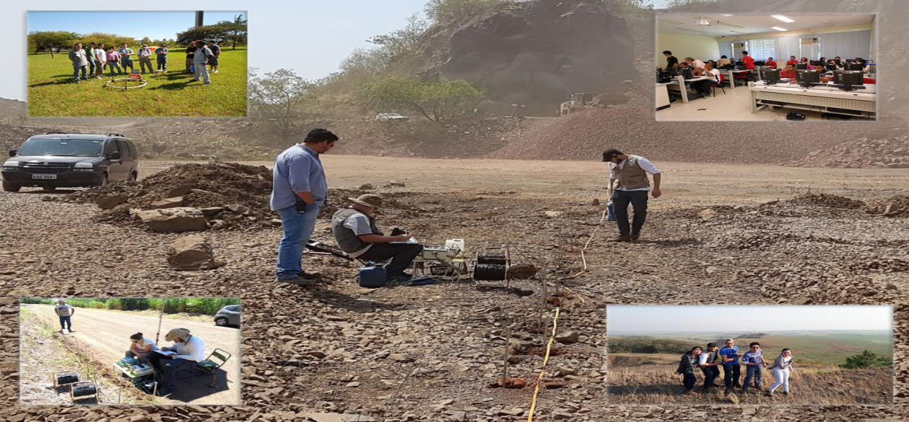

Bacharelado em Astronomia no IAG/USP
Bacharelado em Astronomia no IAG/USP
O nosso bacharelado oferece uma formação em Astronomia e Astrofísica moderna com uma base sólida em Física e Cálculo, complementada com tópicos como: análise de dados, programação, técnicas observacionais e instrumentação astronômica. O curso de Astronomia é estruturado em vertentes: acadêmica, ensino, divulgação, astronomia espacial, etc. Dependendo da vertente, o aluno poderá complementar sua formação aprendendo sobre jornalismo científico, história da astronomia, mecatrônica, ou então seguindo disciplinas mais avançadas de Astronomia e Física.
Disciplinas indicadas para matrícula no 1º semestre:
- Atronomia: Uma Visão Geral I
- Física I
- Física Experimental
- Cálculo Diferencial e Integral
- Vetores e Geometria
- Introdução à Física da Terra e do Universo (feita por requerimento)
Converse e tire suas dúvidas a respeito do curso e da carreira:
Gastão B. Lima Neto (coordenador do curso) - gastao.limaneto@iag.usp.brAlex Carciofi (vice-coordenador do curso) carciofi@usp.br

Bacharelado em Geofísica no IAG/USP
A Geofísica é uma ciência interdisciplinar que utiliza conhecimentos de Física, Matemática, Geologia e Computação para estudar as estruturas e propriedades do subsolo, desde sua parte mais rasa até o interior mais profundo do planeta. Os recursos naturais do Brasil são imensos e precisam ser bem conhecidos para que sejam protegidos e explorados adequadamente. Cabe ao profissional em Geofísica a devida caracterização de estruturas e jazidas. Se você tem afinidade com estas áreas de conhecimento e gosta de uma vida onde a rotina não tem vez, provavelmente você encontrou a carreira certa! Bem-vindo(a)!
Disciplinas do 1º semestre:
- Problemas Integrados em Ciências da Terra I
- Introdução à Geofísica
- Física I
- Física Experimental I
- Calculo Diferencial e Integral I
- Vetores e Geometria
Converse e tire suas dúvidas a respeito do curso e da carreira:
Eder C. Molina (coordenador do curso) - eder.molina@iag.usp.br
Bacharelado em Meteorologia no IAG/USP
A Meteorologia é a ciência que utiliza conhecimentos de Física, Matemática e Computação para estudar a atmosfera, seu comportamento e seus fenômenos. O profissional formado analisa e processa dados para realizar a previsão de tempo e clima, investigar fenômenos como poluição atmosférica, recursos hídricos e mudanças climáticas. Sua profissão tem interfaces com química, oceanografia, meio-ambiente, agricultura e saúde, entre muitas outras. Assim, o meteorologista pode trabalhar em empresas de previsão de tempo e clima, empresas do setor elétrico e hidrológico, empresas de seguro, na mídia (rádio, TV e internet), assim como em universidades e órgãos governamentais de pesquisa. Além disso, a base matemática adquirida no curso também permite ao egresso trabalhar em outras áreas tais como no mercado financeiro, em empresas de desenvolvimento de tecnologias, etc.
Disciplinas indicadas para matrícula no 1º semestre:
- Introdução às Ciências Atmosféricas
- Física I
- Física Experimental I
- Cálculo Diferencial e Integral I
- Vetores e Geometria
- Física da Terra e do Universo (feita por requerimento)
Converse e tire suas dúvidas a respeito do curso e da carreira:
Rachel Albrecht (coordenadora do curso) - rachel.albrecht@iag.usp.brCarlos Raupp - carlos.raupp@iag.usp.br